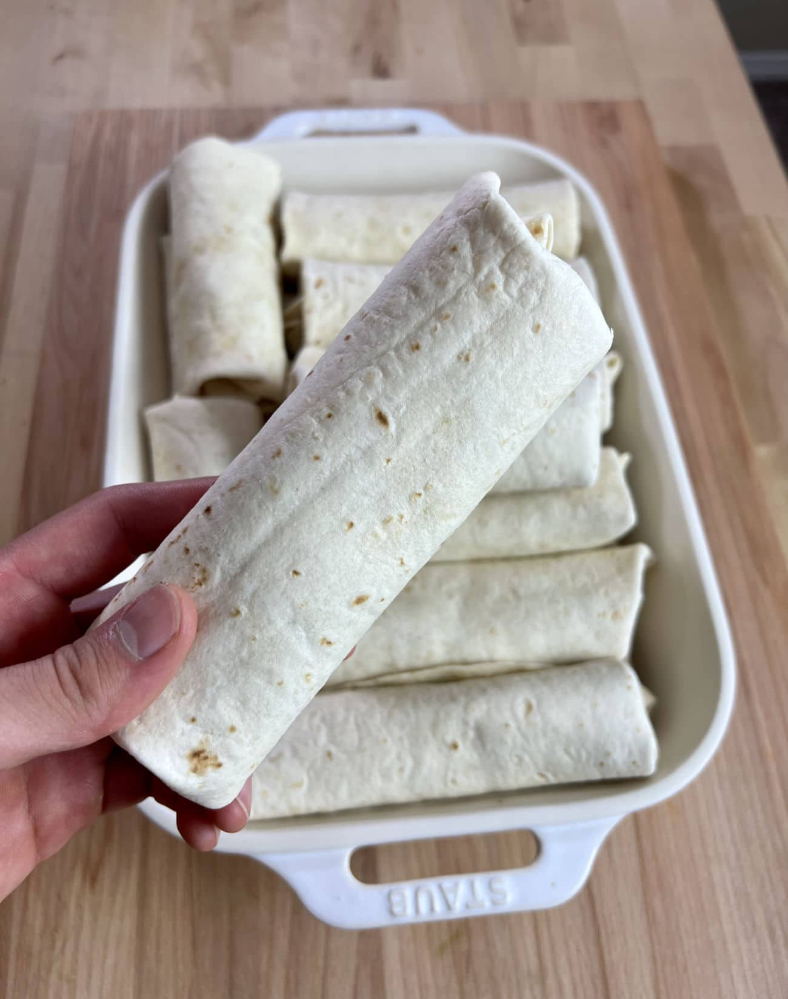

Breakfast Burrito

Overview
A sausage breakfast burrito that is suited for quick breakfasts or lunch. Can be stored in the freezer for up to 3 months.
- Prep Time: 45 min
- Cook Time: 20 min
- Total Time: 60 min
- Servings: 10
Ingredients
Sausage Filling Recipe
- 450 g medium ground beef or lean ground turkey
- 1 tsp cayenne pepper
- 1 tsp smoked paprika
- 1 tsp garlic powder
- 1 tsp onion powder
- 1 tsp oregano
- 1 tbsp cooking oil (if using lean turkey instead of medium ground beef)
- salt to taste
- pepper to taste
Burrito Filling Recipe
- 10 12 inch flour tortillas
- 1 cup shredded cheese
- 1 medium red pepper
- 1 medium green pepper
- 8 eggs
- 200 g frozen hashbrowns
- 1 large onion (or 2 small onions)
- 150 g spinach (fresh or chopped frozen)
- 30 ml milk
- 1 tbsp cooking oil
Directions
For Creating Sausage Filling
- In a large metal bowl, mix all sausage filling ingredients with ground meat. Incorporate all seasoning into meat evenly.
- In a large skillet over medium-high heat, add sausage filling to skillet, spreading the meat as flat as possible. If using lean ground meat, add 1 tbsp of cooking oil prior to sausage filling.
- Allow ground sausage to cook until no pink colour remains before breaking it up in the skillet.
- Remove ground sausage to another bowl for cooling and draining any excess oil.
For Creating Burrito Filling
- Finely dice the onions, green pepper, and red peppers. Add diced vegetables to skillet under medium-high heat with 1 tbsp of cooking oil (or oil from ground sausage). Allow vegetables to cook thoroughly until onions become transparent.
- In a medium bowl, crack 8 eggs and whisk with 30 ml of milk.
- Incorporate egg mix to vegetable skillet mixing well as to not let the egg mix stick to the skillet.
- Add in chopped spinach to skillet (if frozen, cook until thawed) and mix well.
- Add in chopped frozen hashbrowns to skillet mix (if frozen hashbrowns are not slightly thawed, defrost them in the microwave prior to adding to skillet mix).
- Add ground sausage filling back into the skillet and mix all the filling together. Turn off the heat and allow the burrito filling to cool to room temperature, with no lid.
Constructing the Burrito
- Allow the burrito filling to cool down to room temperature with no lid to allow any excess moisture out.
- Place a flour tortilla down, and scoop about 80 g of burrito filling onto the tortilla along with sprinkled shredded cheese. Wrap the tortilla and repeat until there are no more tortillas or filling left.
- Place the burritos in a ziploc bag and then place in the freezer.
- To reheat, microwave a tortilla for 60-90 seconds in the microwave or until hot in the center. Pan fry the microwaved burrito over a small skillet to get crispy edges.
Try other recipes below:
Banana-Blueberry Spinach Smoothie
Congee
Back to Homepage